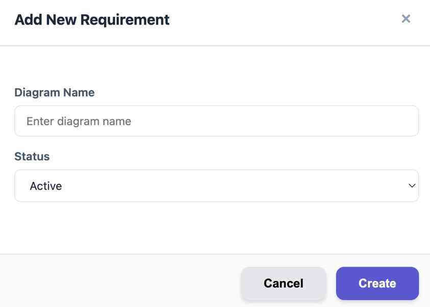
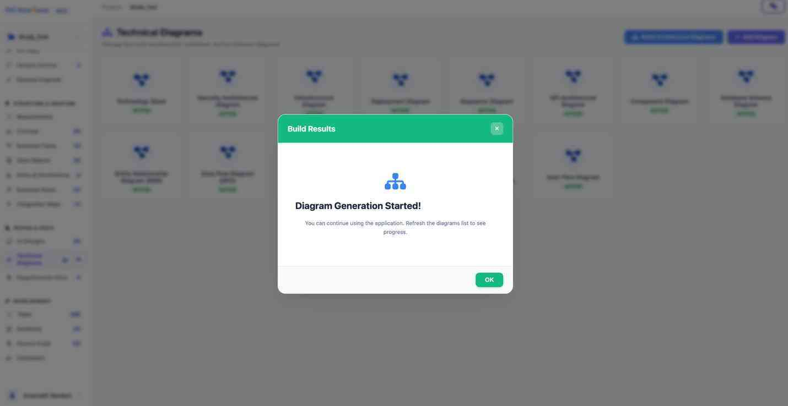
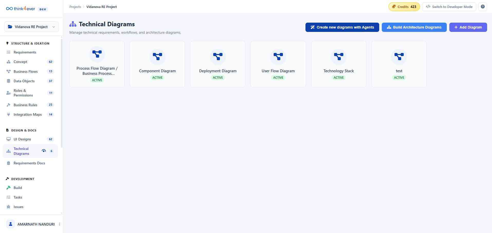
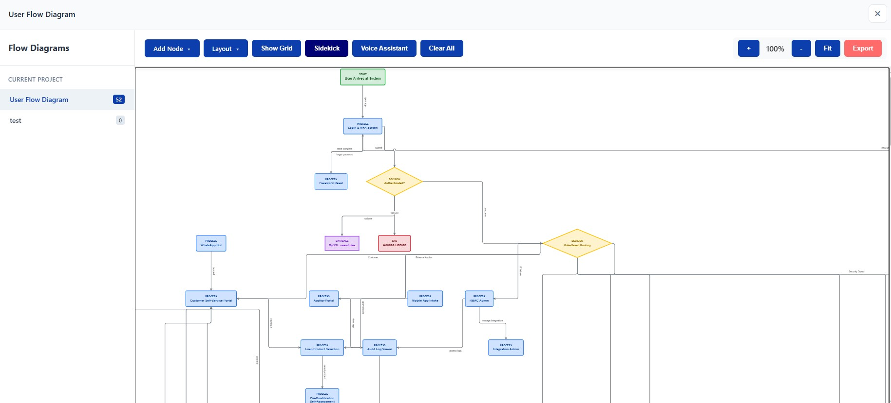

Available Diagram Types
The dashboard is divided into several specialized categories to cover the full development lifecycle:
| Category | Specific Diagrams Included |
|---|---|
| System Architecture | Technology Stack, Security Architecture, Infrastructure, Deployment, High-Level System Architecture. |
| Data & Logic | Entity Relationship Diagram (ERD), Database Schema, Data Flow Diagram (DFD). |
| Process & Flow | Sequence Diagram, Process Flow / Business Flow, Use Case Diagram, User Flow Diagram. |
| Structural Design | API Architecture, Component Diagram. |
Key Action Commands
Located at the top-right of the dashboard, these controls allow for active project management:
- Build Architecture Diagrams: Launches the automated builder tool to generate diagrams based on existing system data or code structures.
- Add Diagram: Opens a manual upload or creation interface to introduce a new visualization to the project.
Add Diagram
This button is for manual entry and custom creation.
- How it works: It opens a template gallery or a blank canvas where you can choose a specific diagram type (e.g., Sequence Diagram, ERD, or Flowchart).
- Result: You manually define the logic, shapes, and connections. It can also be used to upload an existing image file (like a PNG or PDF) from your local drive.
- Best for: Conceptualizing new ideas, documenting specific business rules, or adding external reference diagrams that aren't derived from the project's code.


Build Architecture Diagrams
This button triggers an automated generation process.
- How it works: It uses the platform's AI or system analysis tools to scan your existing project data, codebases, or infrastructure configurations.
- Result: It automatically creates a "High-Level System Architecture" or "Technology Stack" diagram based on actual project facts.
- Best for: Rapidly documenting complex systems without drawing every line manually, or keeping diagrams in sync with real-time code changes.


Interactive Diagram Viewer
The Interactive Viewer allows you to transition from a high-level overview of your project's architecture to a detailed, editable workspace for any specific technical diagram.
Navigation Workflow
- Select: From the Technical Diagrams dashboard, click on any of the active diagram cards (e.g., Data Flow Diagram [DFD]).
- Open: The system launches a dedicated canvas overlay, centered on that specific data model or workflow.
- Explore: Use the sidebar on the left to quickly jump between different diagram types within the same session without returning to the main dashboard.
Workspace Components
| Area | Description |
|---|---|
| Element Toolbar | Located at the top, this bar provides drag-and-drop components specific to the diagram type, such as Start, Process, Decision, Database, and API nodes. |
| Logic Canvas | The primary area where the workflow is visualized. It supports complex branching, layered layouts, and multi-node connections. |
| Editor Sidebar | Lists all available diagram categories for the current project. Numerical indicators show how many iterations or sub-diagrams exist for each type (e.g., High-Level System Architecture: 42). |
| Action Suite | A specialized set of buttons for canvas management, including Auto Layout, Voice Assistant, Clear All, and zoom controls (100%, Fit). |


Key Features
- Contextual Elements: The toolbar automatically updates based on the diagram type selected, ensuring you use the correct notation (e.g., diamonds for Decisions in a DFD).
- Layout Management: Use the Layered Layout and Direction (Top to Bottom) dropdowns to instantly reorganize complex "spaghetti" diagrams into clean, readable structures.
- Collaboration & Export: Once your diagram is finalized, use the Export button to download the visualization for external documentation or presentations.
Tip: Enable the AI Assistant to make rapid changes to your diagrams using natural language commands, similar to the Modify Page tool.
Toolbar
The top toolbar in the Diagram Editor is divided into three functional zones: Node Creation, Layout Management, and Canvas Utilities. These tools allow you to build and organize complex data flows with precision.
Node Creation Tools
These buttons add specific logic elements to your canvas. Each follows standard technical diagramming notation:
- + Start: Inserts a terminal node representing the beginning of a process or entry point.
- + Process: Adds a rectangular node to represent a specific action, computation, or system task.
- + Decision: Inserts a diamond-shaped node used for branching logic and "If/Then" scenarios.
- + Database: Adds a cylinder-shaped node representing data storage, tables, or repositories.
- + API: Inserts a node specifically for external service integrations or interface endpoints.
- + End: Represents the exit point or completion of a specific workflow.
Layout & Direction Controls
Use these dropdowns to define the global visual structure of your diagram:
- Layered Layout (Dropdown): Choose between different algorithmic styles, such as "Layered," "Tree," or "Organic," to best fit your data's structure.
- Direction (Dropdown): Sets the flow orientation (e.g., Top to Bottom, Left to Right) to ensure logical readability.
Canvas Utility Suite
These buttons provide advanced management and accessibility features:
- Auto Layout: Instantly snaps all nodes and connectors into an organized grid based on your selected direction and layout style.
- Show Grid: Toggles a background grid to assist with manual alignment and spacing.
- Sidekick / Voice Assistant: Activates AI-driven support, allowing you to modify the diagram or add elements using natural language commands.
- Clear All: Wipes the entire canvas to start a new design from scratch.
Navigation & Export
- Zoom Controls (+ / 100% / - / Fit): Adjust your view of the canvas. Fit automatically scales the diagram to fill the visible screen area.
- Export: Saves the current visualization as a high-resolution image (PNG/SVG) or a document (PDF) for external use.